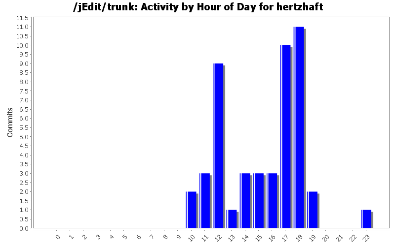
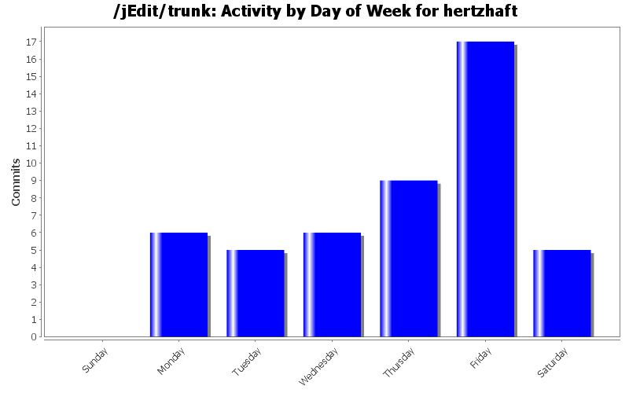
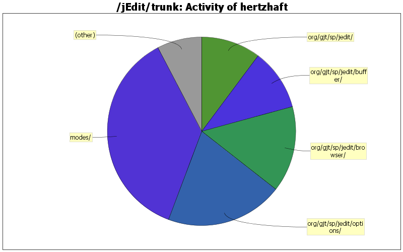

| Directory | Changes | Lines of Code | Lines per Change |
|---|---|---|---|
| Totals | 48 (100.0%) | 1732 (100.0%) | 36.0 |
| modes/ | 6 (12.5%) | 635 (36.7%) | 105.8 |
| org/gjt/sp/jedit/options/ | 3 (6.3%) | 349 (20.2%) | 116.3 |
| org/gjt/sp/jedit/browser/ | 8 (16.7%) | 256 (14.8%) | 32.0 |
| org/gjt/sp/jedit/buffer/ | 5 (10.4%) | 183 (10.6%) | 36.6 |
| org/gjt/sp/jedit/ | 14 (29.2%) | 177 (10.2%) | 12.6 |
| org/gjt/sp/jedit/gui/ | 3 (6.3%) | 83 (4.8%) | 27.6 |
| doc/ | 6 (12.5%) | 48 (2.8%) | 8.0 |
| org/gjt/sp/jedit/io/ | 1 (2.1%) | 1 (0.1%) | 1.0 |
| org/gjt/sp/jedit/icons/ | 2 (4.2%) | 0 (0.0%) | 0.0 |

replaced requestFocus() with requestFocusInWindow() for registerList (thanks Jarek)
10 lines of code changed in 2 files:
Feature request# 3437779: added key bindings to RegisterViewer; set inital focus to registerList
75 lines of code changed in 1 file:
1st attempt would return a wrong extension when there's a dot in the path and no file extension, thx Matthieu
3 lines of code changed in 1 file:
Fix for feature request 1708881 (File Browser in 4.3 pre: reset the column width when resort)
5 lines of code changed in 1 file:
Fix for feature request 1708876 (file browser 4.3 pre wrong file type parsing)
2 lines of code changed in 1 file:
support for fully qualified variable names like $Some::Module::test
15 lines of code changed in 2 files:
simplified regexes for regex highlighting to avoid heavy CPU load
4 lines of code changed in 1 file:
Applied patch #1592784 by Kazutoshi Satoda.
0 lines of code changed in 1 file:
Store buffer autoreload settings in perspective.xml (#1578785); corrected perspective.dtd
33 lines of code changed in 3 files:
Automatic reload of a changed buffer without prompting (feature request #1578785), not persistent yet. Autoreload settings configurable per buffer. Factored out options/BufferOptionPane.
426 lines of code changed in 8 files:
Attempt to fix #1571629
24 lines of code changed in 1 file:
get rid of 1 deprecation warning
1 lines of code changed in 1 file:
VFS browser: sort columns by extension when clicking on column "Type"
21 lines of code changed in 2 files:
VFS browser: keep current sort parameters throughout session; bug fix in FileVFS
33 lines of code changed in 2 files:
VFS Broswer: Added icons to indicate the sorted column and the sorting direction
32 lines of code changed in 3 files:
Added column sorting for VFS browser
153 lines of code changed in 3 files:
reorganized the saving of markers, reducing the use of WorkThreads when saving markers and when deleting left-over markers files
39 lines of code changed in 4 files:
added myself to about.text
1 lines of code changed in 1 file:
documented recent fixes by hertzhaft
13 lines of code changed in 1 file:
fixed infinite loops in transliteration and regex highlighting, added complex operators, perl special variables, references, dereferencing expressions, implicit literals (in hash expressions), labels, file globs
150 lines of code changed in 1 file:
(4 more)